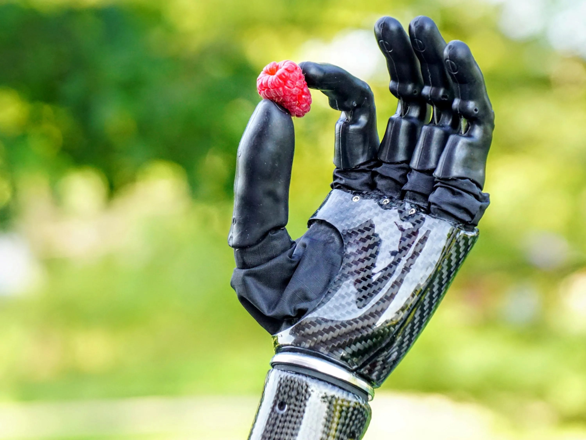
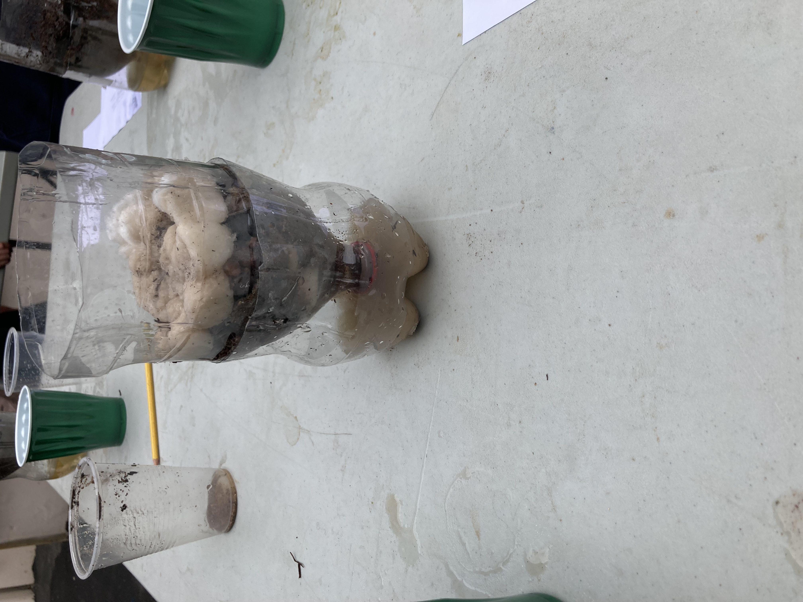

This is your title!

Week 1 8/21-8/25
this week was very fun since the class was split into 2 sides and
we experiment with the half pipes and marbles. Each team had to
make a track for the marble and move it to a bucket which was too
far away for all the half pipes so we had to run and hand the pipes
to people down the line. In the end my team won and it was a good experence
Week 2 8/28-9/1
this week we talked about tinker cad and made 3D objects that
we would find in our homes. I made a microwave and i would say that
it is very good
Week 3 9/5-9/8
This week we made tinkercad designs for a rube goldburg machine.
Then we watched a video on mechanical engineering whcih we took
notes on.
Week 4 9/11-9/15
this week we made our rube goldburg machine with card board. I worked with
my table which consisted of joe,andrew,evan and me. together we
made a good track but we had so many attempts since we did not have
enough power for the car to pop the ballon. But in the end we did it
and it was fun to create.
Week 5 9/18-9/22
this week we made boats made out of paper and my design could hold 99.0
grams which was a good score in the class but the best was 122 grams
at the end of class we drew E's and cut them out
Week 6 9/25-9/29
This week we dicected a computer with Andrew SInclair. We started by
taking the cover off and inside it looked so complicated and i thoght
we could never finish. next we took out everything inside which started
with big stuff but then we got down to the wires which were hard to unplug.
the hardest part was supose to be taking everything out but when
we started puting everything back in we realized we had to put something
under the motherboard so we had to unscrew everything and start over.
when we were about half way done i had to go to my water polo game
but Andrew put it back together and it was super fun and i learn a lot.
Week 7 10/2-10/6
This week we learned about biomechanics. A big part of biomechanics
is prostetics and we learned all about that. next we made a tinkercad
design of a prostetic for a animal and i made a leg for a monkey. It was
very fun and next week we will make a cardboard prostetic hand.
week 8 10/8-10/12
this week i was sick but i learned that we switched seats.
then we took a quiz on biomechanics. After that we went over the
Aerospace engineering slides and watched a video on space x self landing rocket.
on thursday we made a tinkercad model of our rocket that we are going to make next week.

week 9 10/24-10/28
I was sick last week so i had to do my tinkercad of my rocked bottle
on monday but i got that finished so on tuesday I partnered up with dickson
and we bade our model and on thursday we tested our design and it did
pretty bad and went about 12 feet but it was fun.
Week 10 10/23-10/27
this week we made water filters using rocks pebbles sand and
cotton balls. we put all the materials in a plastic bottle,
it didn't work very well, I belive that it is because there was
to much sand and it made the water dirty. In the end we did bad but I learned a lot

week 11 10/30-11/3
This week we learned about circut boards. For me this week was hard
we learned a lot of things and it was hard to remember everything.
We did 2 labs and the first one took me a while but once i learned how to
do it i did the second one easily even though it was harder. On friday
all we did was Our website and now I am cought up.
Week 12 11/6-11/10
This week we had 2 labs that we did in a real circut board. The first one
was basic and we did it pretty fast. It took us a while to set up our
arduino and have evrything pluged in and once it was right it didn't work.
We figured out that our arduino was broken so we got another one and
it worked. In the next lab it was hard to set up and we made code but
even though the code was supose to be right it didn't work. In the end
we learned that the last code that was made on the arduino was left there
so we couldent continue. But I still learned alot and we will try again later.